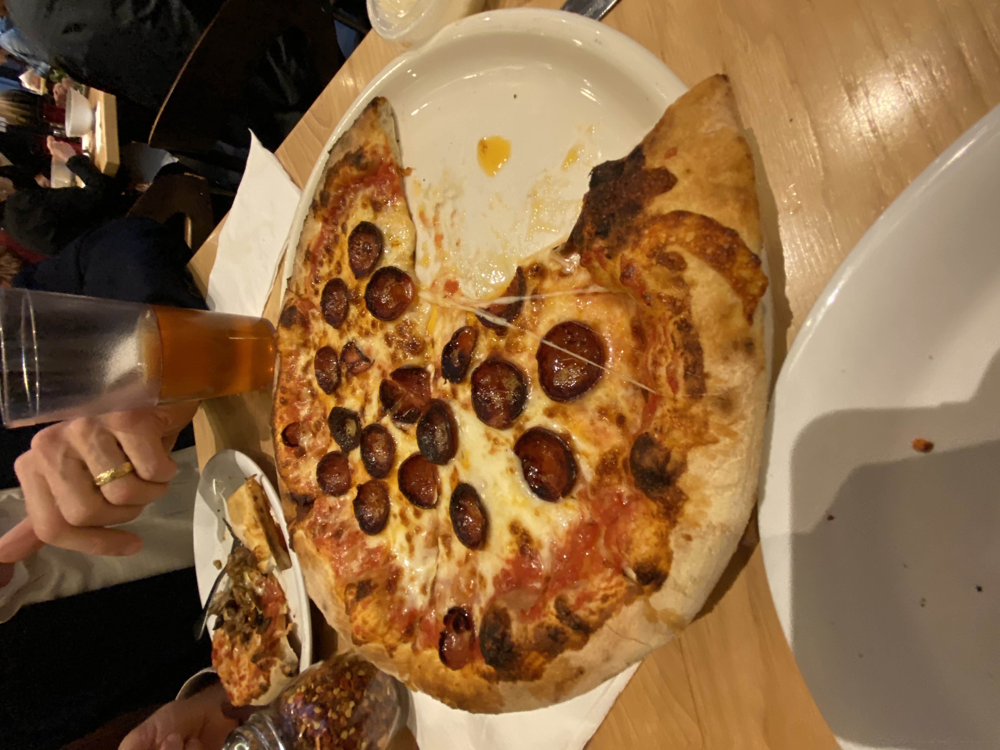

I discovered this chain as I explored the Amish Market in Berlin, Ohio. I loved the area, and having a pretty decent pizza place made the day much more enjoyable, on top of having some AMAZING pretzels.
My PizzaScore: 6.75/10
Little Caesar's
Harrisonburg, VA
April 22, 2020 by Aric Flor
Little Caesars is probably one of the lowest quality large pizza chains but still has some redeemable qualities, namely in their growing delivery market, their italian cheese bread, and their carryout lunch specials. For $5, you can get a personal deep dish pizza and a drink. Pretty solid deal for a pretty solid amount of food! Their classic pizzas however are a little more of the lower quality and cheap type that you can get for parties. Definitely look out for their new lunch deals!
My PizzaScore: 6.5/10
Domino's Pizza
Harrisonburg, VA
April 20, 2020 by Aric Flor
Time to review the mother of all pizza chains in the United States, Dominos! Now, admittedly, Dominos is sort of the standard that most pizza places should be able to compete with if they want to stand out. I mean its Dominos. Delicious crust, toppings, and side dishes (I am a huge fan of their cheese bread)! You can never go wrong with ordering some Dominos for the family or for a group (And most cities have a Dominos to begin with)!
My PizzaScore: 7/10
Ciro's Lasagna House
Harrisonburg, VA
April 19, 2020 by Aric Flor
My recent acquisition of a bike during the quarantine brought me to this local Italian restaurant in Harrisonburg. While named for their Lasagna, I had my eyes set on their pizza. Namely, their sicilian pepperoni pizza. I also got a side of their garlic bread. I... was disappointed in this place. Though people i've seen at work have urged me to still give this place another shot sometime. The pizza wasn't as bad as it looked. Which... is something? But the garlic bread was basically just fried bread with some garlic sprinkled on. And that was sortof uneatable. Will I ever come back again? I'm not sure, but if i'm told to give it a second try, i'll be happy to try some of their other menu options.
My PizzaScore: 4/10
Vinny's Italian Grill & Pizzeria
Harrisonburg, VA
April 13, 2020 by Aric Flor
Vinny's Italian Grill & Pizzeria is a chain of restaurants that I had previously become acquainted with in Charlottesville. It was a pleasant surprise to find a Vinny's in Harrisonburg as I began to attend James Madison University, as it was also a great local community place in Charlottesville. Overall its a great sitdown restaurant, and will forever be known as my girlfriend and I's first date location. You can't go wrong here with the bruschetta!
My PizzaScore: 6.75/10
Vocelli Pizza
Charlottesville, VA
March 24, 2020 by Aric Flor
Vocelli Pizza is another one of my favorite pizza chains, and I am a longtime fan of their pizza ever since I lived in Charlottesville. If there were a standard i'd want to hold all other pizza restaurants too for quality and taste, i'd point them in this direction. Seriously, give it a shot, you won't regret it!
My PizzaScore: 10/10
Extreme Pizza
Richmond, VA
March 12, 2020 by Aric Flor
So this is the second pizza restaurant I have reviewed on here that cooks their ingredients underneath the cheese. And my opinion on this is that it doesn't really work that well, unless the ingredients are already cooked a little. Otherwise it leaves the toppings less cooked than the cheese. Extreme pizza was extremely cheesy, with a blend of mozzerella and cheddar, to the point where it was a little overwhelming. I'd love to give it another shot sometime but I'd rather the toppings be cooked more, oh and a little less cheese?
My PizzaScore: 5.5/10
Ruby's Arcade: Woodfired Pizza & BBQ
Harrisonburg, VA
March 11, 2020 by Aric Flor
This pizza was better than I remembered it! Looking for a place to enjoy some duckpin bowling or some billiards? Ruby's can take care of that for you, while you snack on some great pizza. And a bonus? If its your birthday, you get a free pizza!
My PizzaScore: 6.75/10
Christian's Pizza
Charlottesville, VA
March 9, 2020 by Aric Flor
A long time ago, Christian's used to be one of the goto pizza restaurants for my family and I. Now, it is frankly overshadowed by some stronger locations in Charlottesville. Christian's Pizza has two locations near the University of Virginia, and one that branched out towards a local neighborhood outside the city of Charlottesville. Their pizza? Thin crust with nice ingredients topped with parmesan. If there were just a little more crust and less grease I feel like it would be easier to prefer. Also, they offer less deals and their prices are a little higher than other local locations.
My PizzaScore: 7/10
Vace
Bethesda, MD
March 6, 2020 by Aric Flor
This was my second time having this, the first being at least two years ago. This was a lot better than I remembered it being! Vace is a take-and-bake pizza restaurant where they will cook the pizza halfway and you take it and bake the rest at home. The advantage to this is that you get the pizza fresh, and it definitely helped with the flavor! Its just a shame that with this visit that I didn't get the best service, and they also messed up my order a little. (Who cuts a take-and-bake pizza into its slices if it needs to go back into the oven?)
My PizzaScore: 8.5/10
Papa John's Pizza
Harrisonburg, VA
February 29, 2020 by Aric Flor
Papa John's is probably one of my favorite delivery chains, and it definitely helps that I lived right by one in Arizona! Papa John's consistently has some good deals for some great pizza, where they'll even throw in some delicious Garlic Sauce to dip the crust in! Yum!
My PizzaScore: 7.75/10
Mellow Mushroom
Charlottesville, VA
February 14, 2020 by Aric Flor
Mellow Mushroom is one of my personal favorites of any of the national chains in the United States. I really enjoy savoring every bite of the high quality pizza with high quality ingredients as I get to bask in the atmosphere of the restraurant's interior. The beer cheese pretzels are a fantastic touch as well!
My PizzaScore: 9.5/10
Pizza Hut
Harrisonburg, VA
February 12, 2020 by Aric Flor
Many ask themselves if its even possible to outpizza the hut. But what are we kidding, its Pizza Hut! Pizza Hut still has many locations open, however, they are transitioning from what used to be dine-in establishments to take-out and delivery. I will say that I like their pizza every once and so often. I don't think i'd prefer it over other chains and local pizza restaurants however. I just wish that they would bring their pretzel crust back!
My PizzaScore: 6.75/10
Mary Angela's Pizzeria
Richmond, VA
February 1, 2020 by Aric Flor
I barely got to try this place as I visited Carytown, Richmond. But it was a nice pizza to have as a late night snack. Better than most of the pizza restaurants from Harrisonburg!
My PizzaScore: 6.25/10
Little Italy Pizza
Harrisonburg, VA
January 28, 2020 by Aric Flor
I had wanted to try this place for a while, and I got the opportunity. This place happens to be a short walk from where I live and it seemed like a cute little pizza restaurant from the outside. From the inside though? The location is average at best. I preferred taking the pizza to go. They have a togo meal option that seems a little steep in price (though I'd be just comparing it to End Zone's meal deal from Charlottesville). But this pizza was average. I'd only place it slightly above Benny Sorrentino's, as the two pizzas tasted very similar. Just with this place the crust was a better quality.
My PizzaScore: 6/10
Sbarro Pizza
Atlanta, GA
January 10, 2020 by Aric Flor
I have decided that I have reviewed enough smaller pizza restaurants to begin moving up towards reviewing some of the larger chains across the country. Sbarro Pizza is a place I commonly run into at malls or airports, and that is exactly how I found it again. Before flying back out to college I hastily grabbed two slices of pizza from here to go. I enjoy sbarros, its good to have every once in so often, with a good tasting crust. There is a lot of grease though, but if you can get past that, its definitely a comfortable pizza choice for food courts!
My PizzaScore: 7/10
R&R Pizza Express
Benson, AZ
January 6, 2020 by Aric Flor
On my way back from a visit in Tucson, Arizona, I decided to make a short detour through Benson, Arizona, on the way to try a pizza place I had in my sights for a while, and I was not disappointed. R&R Pizza Express is a hole-in-the-wall pizza restaurant in Benson that not only has a sit-down area and a buffet, but also a small mini-arcade. To top off the atmosphere, I was very satisfied with the pizza, all the way from the crust, up through the cheese, sauce, and toppings. It was the perfect to-go pizza, and I'm glad I decided to make my detour.
My PizzaScore: 7.5/10
Grandma Tony's Pizza & Wings
Tucson, AZ
January 1, 2020 by Aric Flor
Need something to eat while watching a show at the well-known Gaslight Theater? Grandma Tony's is a part of the same business and location as the Gaslight Theater, and Little Anthony's Diner. Tony's even has the reputation of being among the best pizza locations in Tucson. In my opinion however, if this is the best pizza in Tucson, then I am worried to try other pizza restaurants around the city. The quality of toppings and dough was low and the balance of cheese to the rest of the pizza was overwhelming. This being said, definitely go see a Gaslight Theater show and try one of the Big Bopper milkshakes from Little Anthony's!
My PizzaScore: 3/10
Johnny's New York Style Pizza
Newnan, GA
November 29, 2019 by Aric Flor
I had a pleasant experience with Johnny's New York Pizza, as the service was very kind, the pizza was good, and the atmosphere of the restaurant felt like a bar as well. I felt like I found a hidden gem of pizza restaurants while experiencing this delicious pizza during my Thanksgiving travels. Overall, great place and I can't wait to see if I'll ever visit again!
My PizzaScore: 7.75/10
Your Pie: Let The People Choose Their Toppings
Athens, GA
November 24, 2019 by Aric Flor
Your Pie is a brick oven style pizza that happens to be a fairly new chain that began in Athens, Georgia in 2008 and has begun expanding to plenty of locations around the country. Your Pie was a great experience, allowing full customizability of your pizza from the crust all the way up through the cheese, sauce and toppings, truly making it, Your Pie. Additionally, as a bonus for getting the pizza as a combo, you can treat yourself to some delicious gelato. I look forward to the future of Your Pie as a new growing pizza chain.
My PizzaScore: 7/10
90 Second Pizza
Washington, DC
November 16, 2019 by Aric Flor
I almost did not put this pizza place on this blog, because I technically didn't visit it. However, that being said, I was able to try a sample of 90 Second Pizza in DC before going to see a live performance at Blues Alley. 90 Second Pizza prides themselves on their impressive preparation speed of traditional neapolitan pizza with their 900 degree oven made from volcanic stone brought from Vesuvio, Italy. And honestly, having a sample of this pizza was a delight, however, this wouldn't be my go-to pizza restaurant. I highly respect the level of dedication put into this restaurant though!
My PizzaScore: 4.5/10
Viaggio: Pizza On The Go
National Harbor, MD
November 16, 2019 by Aric Flor
Viaggio's is a gem of a pizza place I discovered while visiting the National Harbor, which showcases their Detroit-style pizza. Before visiting this place, I had never tried Detroit-style pizza, however I thoroughly enjoyed giving it a try. Detroit-style pizza is a rectangular pizza with a thick crisp crust, and this place did not hold back, not only having a delicious, crisp, and rectangular crust, but also topping it with delicious parmesan cheese. I hope to try many places like this in the future, and I cannot wait my return to the great place I chanced upon!
My PizzaScore: 8/10
Benny Sorrentino's
Harrisonburg, VA
October 20, 2019 by Aric Flor
Benny Sorrentino's prides itself on its chain of pizza restaurants that cater to college campuses with their "Virginia Slice", where they sell super-sized pizza by the slice. While the pizza itself is average, it is fun to order out a giant full pizza and take it down with friends at a party or other social event. This is a chain I will still continue to look out for even after I graduate college.
My PizzaScore: 5.5/10
Tutti Gusti
Harrisonburg, VA
October 14, 2019 by Aric Flor
Tutti Gusti is a local pizza place in Harrisonburg that is just by the I-81 entrance and exit, which is also near the JMU X-Labs building. Tutti Gusti's pizza meets the standards, but is definitely a place I would like to return to soon, as their side dishes look quite enticing. Definitely give it a shot if you're ever near James Madison University's new College of Business building.
My PizzaScore: 6/10
Bistro 1908: Italian Kitchen
Harrisonburg, VA
October 7, 2019 by Aric Flor
James Madison University's Student Success Center is one of the major dining options on campus, which happens to include a pizza place that cooks half pizzas in a brick oven. By far, the best pizza available on campus, but lately, like other dining options, is dropping slowly in quality and is becoming more average. But on the bright side, decent pasta, garlic knots, and pizza!
My PizzaScore: 5/10
Campono
Washington, DC
October 5, 2019 by Aric Flor

Campono is a fantastic wood fired pizza and gelato place that I make it a point to visit before seeing a show at the Kennedy Center in Washington, DC. High quality ingredients with a perfect blend of sauce, cheese, toppings, altogether on a delicious crust. I always look forward to each opportunity I get to return to this restaurant.
My PizzaScore: 9.25/10
Bella Luna Wood Fired Pizza
Harrisonburg, VA
September 21, 2019 by Aric Flor
Bella Luna caters to its audience by being a wood fired pizza place that serves higher-end quality pizza than the average pizza place, serving margherita pizzas and high quality ingredients. Incidentally, there is also a gelato place across the street that is owned by Bella Luna as well, which they will point you to after your meal. While many people enjoy higher-end pizza such as pizza from here, I, on the other hand, am not as big of a fan of margherita pizzas. This place will be tucked away in the back of my mind though if I need a pizza company to cater my wedding.
My PizzaScore: 5.5/10
Brickhouse Tavern
Harrisonburg, VA
September 14, 2019 by Aric Flor
Looking for a place to eat before seeing one of James Madison University's Forbes Center shows? The Brickhouse Tavern is in perfect location for that, being right next to the Forbes Center for the Performing Arts. Brickhouse Tavern offers a wide selection of food, including: Nachos, Sandwiches, Drinks, and most importantly, Pizza! Brickhouse Tavern's pizza is at the very least better than all of James Madison's on-campus pizza options, and is in a wonderful location closeby to campus. However, that being said, the side dishes and anything other than the pizza are of lesser quality than the pizza and the drinks, which admittedly I am not old enough to experience that side of the restaurant. Overall, a good reliable place to eat for some decent pizza!
My PizzaScore: 6.5/10
Crozet Pizza
Crozet, VA
August 19, 2019 by Aric Flor
I had heard from many in Charlottesville that Crozet Pizza was some of the best pizza they had ever had, and Crozet Pizza did not disappoint. Their pizza was very delicious with the perfect amount of all layers of the pizza, from the crust all the way to the cheese and toppings, even with some nicely added spices. I would really like to return one day to experience their appetizers, but in the meantime, its nice knowing a pizza place so good you just can't wait to have the leftovers.
My PizzaScore: 10/10
End Zone Pizza and Subs
Charlottesville, VA
August 16, 2019 by Aric Flor
End Zone Pizza is a place that I have always enjoyed during my time in Charlottesville, and had the pleasure of experiencing again before I returned to college in Harrisonburg, Virginia at James Madison University. The pizza is delicious, and their garlic knots are my all time favorite appetizer at any pizza restaurant anywhere. Additionally, they have good lunch deals and are even known for their 28" Beast Pizza, which is great for parties. Overall, I will always be trying to come back to this place time and time again when the opportunity arises.
My PizzaScore: 10/10
Ray's Antique Mall and Pizza
Huachuca City, AZ
August 6, 2019 by Aric Flor
Ray's Antique Mall and Pizza located out of Huachuca City, Arizona is a family business that one of my lifeguard coworkers out in Arizona is involved in. I had the opportunity to try this pizza one evening as he treated us to some Ray's Pizza after a shift one day, and it to be honest was not my favorite. For one, the pizza is unique in the sense that the toppings are placed on the pizza BEFORE the cheese, which can taste well when done right, but for the time I ate it, it just didn't seem all the way cooked over. From my impression, their wings are fairly popular, leading me to believe that Ray's Pizza is another Pizza and Wing joint where the wings sadly outperform the pizza.
My PizzaScore: 2/10
Knead to Know Pizza
Fort Huachuca, AZ
August 1, 2019 by Aric Flor
Knead to Know Pizza is quite literally a pizza place located on Fort Huachuca, Arizona that you would need to know about in order to know where it is. I have the opportunity on some occasions to visit this place and is usually not preferrable to me personally. However, that being said, there are many different toppings to offer on their pizzas here and their side dishes are very nice as well. Additionally within the building is an 18+ area filled with gaming PC's which are available for use by paying money based on how much time you spend on them. Also in the building is a movie room, ping pong and pool tables, and even a travel agency to help book trips.
My PizzaScore: 4/10
Vinny's New York Pizza
Sierra Vista, AZ
July 31, 2019 by Aric Flor
Vinny's New York Pizza is a pizza and wing joint in Sierra Vista, Arizona that remains very active in its community through various charitable promotions such as assisting the Boy Scouts and the local Buena High School band program, for example. I recently had the opportunity to come to this place for an end-of-year lifeguard party and I was pleased with the pizza here. The menu looks to have a lot of options and there are also many who have attempted their wings challenge and made it on their ever-expansive wall of fame.